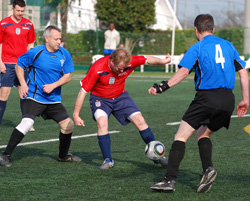
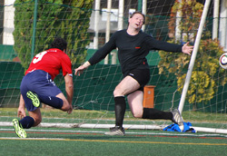
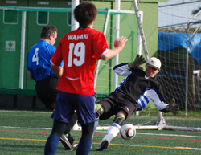

|
YC&AC, Saturday 13th March.
A sunny yet blustery YCAC played host to the Old Boys & BEFC, a match which when last played served up 7 goals and saw the Embassy squeeze past...ahem.. 7 men. No such problems this time round as the game kicked off with a full complement of players and BEFC first to have the wind behind them.
Rather than proving to be beneficial, the wind seemed to create more problems than good. Passes were over-weighted and beyond the reach of the strikers who were kept relatively quiet for the first 20 minutes. At the other end, Albion’s diligent approach work reaped little reward as Ian and Sotaro had typically solid afternoons. It took a while for the Embassy to realize that perhaps it was a good idea to shoot with the wind; Alex and Masa both tested the keeper and Ian hit a humdinger from range inches over the bar.
With half-time approaching though, the Embassy mustered a deserved lead. Alex and Steve’s recent development as a partnership continued to bloom with the latter crossing for Al to head home firmly inside the post.
Having braced themselves for an Albion wind-assisted surge, the Embassy instead continued to dominate and were to double their lead in the early stages of the second half. This time it was Satoshi who bravely got his head to a cross and at 2-0, the game looked done and dusted. Things never seem to pan out that way with BEFC though and some slackness crept in. Following a screaming shot from the edge of the area which halved the deficit, the Embassy rode their luck at times most notably when the post was struck and then when Sotaro made amends for an error with some brilliant recovery work. That said, the Embassy may have grabbed a goal themselves with Richie firing over from close-range and some corners just needing a more deliberate touch.
 And so it ended 2-1 and a most welcome victory for BEFC which sees them sit inconspicuously in mid-table. The ‘Ford Escort’ midfield of Ferdy and Gazza harried well all afternoon and Craig and Masa’s intelligence on the flanks caused the Old Boys some problems. Rob belied his “roly-polyness” by winning header after header and Tim and Lou were biting in the tackles. Keith, though rarely tested, made some vital interceptions and with the central defensive and striking partnerships getting better week after week, there’s no reason why BEFC can’t have a successful end to the season.
Report by Robert Horsfield
|